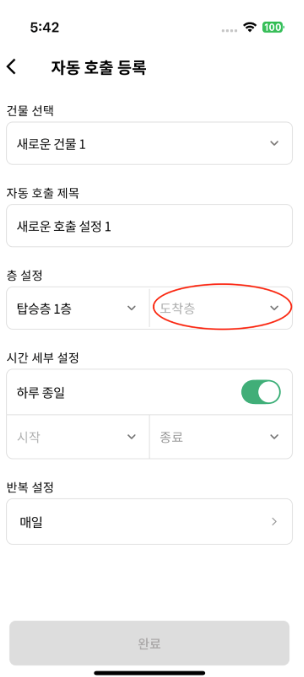
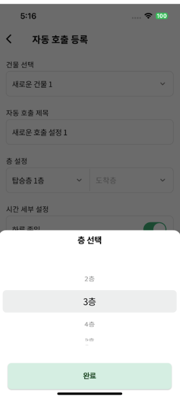
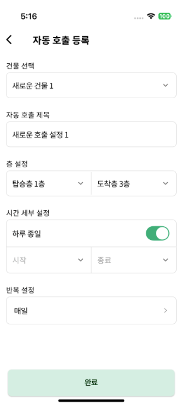
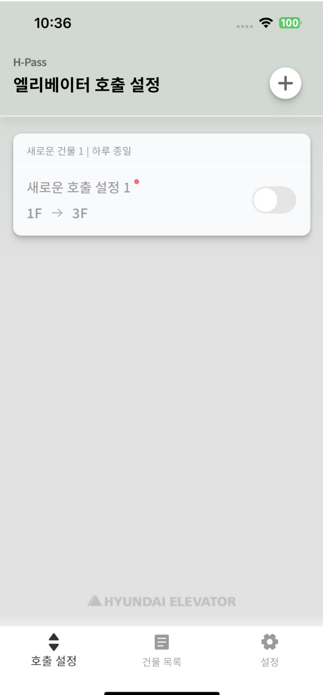
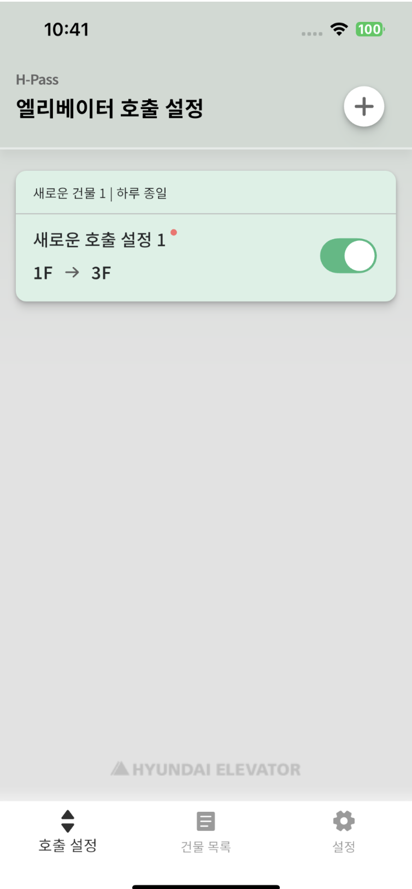
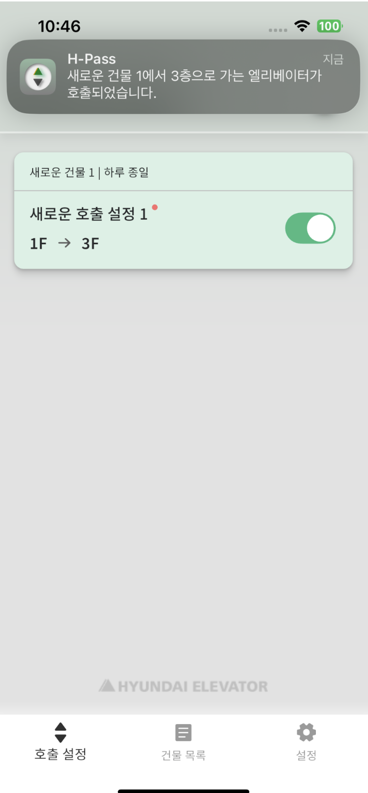
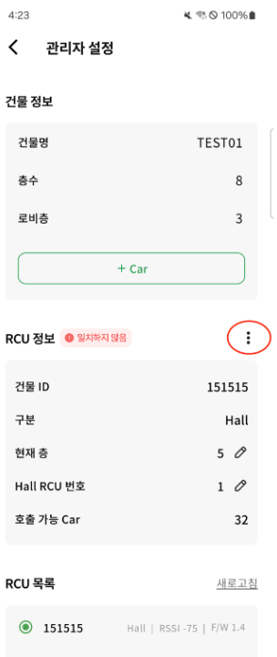
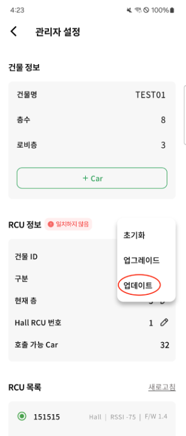
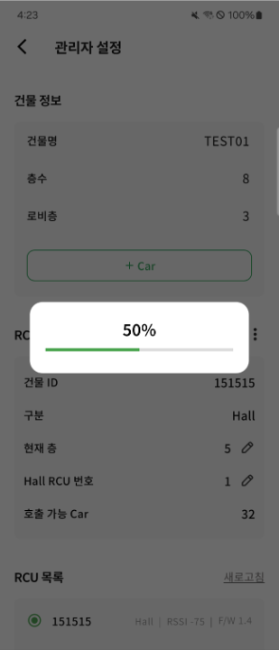

H-PASS
현대엘리베이터 BLE 엘리베이터 자동 호출 앱
SWM (현대엘리베이터 과제) · Flutter 앱 개발 · 2024.11 ~ 2025.10
등록한 일정과 BLE 신호를 판단해, 앱이 백그라운드에 있어도 엘리베이터를 자동으로 호출합니다. Android·iOS를 Flutter 하나로 개발하며 플랫폼마다 다른 백그라운드 BLE 제약을 풀었습니다.
- Tech
- Flutter, Dart, Provider, flutter_blue_plus, CoreBluetooth(Swift), MethodChannel, Background Service(Isolate), Local Notification
- Team
- App 1 · PM 1 · MCU 2
- 검증
- 사내 사옥 실제 엘리베이터(제어기·호출기 장착) + 현대엘리베이터 시뮬레이터에서 QA 측정
Overview
프로젝트 개요
H-PASS는 사용자가 등록한 일정과 엘리베이터의 BLE 신호를 판단해, 승강장 호출 버튼과 목적지 층 버튼을 자동으로 눌러 주는 스마트 IoT 서비스입니다. 사용자는 출퇴근 시간과 출발·도착 층만 등록하면, 엘리베이터 앞에서 버튼을 누를 필요가 없습니다.
승강장(Hall)과 엘리베이터 카(Car)에 설치된 BLE 장치가 현재 층과 운행 방향을 계속 송출합니다. 앱은 일정 시간대에 이 신호를 스캔해 신호 세기(RSSI)로 거리를 판단하고, 승강장에 다가가면 호출을, 탑승하면 목적지 층을 자동으로 등록합니다.
핵심 과제는 앱을 열지 않아도 1M 이내에서 엘리베이터 호출이 되어야 한다는 점이었습니다. Android와 iOS는 백그라운드 BLE 제약사항이 달라서 하나의 Flutter 코드베이스 위에서 플랫폼별로 다른 백그라운드 구조를 설계했습니다.
My Contribution
프로젝트 기여
- 백그라운드 호출 서비스 백그라운드 Isolate 기반 상태 머신(Idle → Hall 호출 → Car 탑승 → 하차)과 일정 판단 로직 구현
- iOS 네이티브 연동 State Restoration·Service UUID 필터 스캔을 Swift로 분리해, 앱이 종료된 뒤에도 감지·호출
- 호출 시간 단축 고정 대기 후 write하던 방식을 notify 구독 완료를 기준으로 write하도록 바꿔, 준비 전 write로 호출이 누락되는 문제 없이 대기 시간을 줄임 (iOS 3.5초 → 1.5초)
- 연결 안정화 Android GATT 133 연결 에러를 재시도로 복구해 일시적인 연결 실패로 호출이 끊기지 않도록 처리
- OTA 펌웨어 업데이트 BLE로 펌웨어 전송(20바이트 패킷, CRC16 검증) 구현
Case Study 01
iOS 백그라운드 호출 · Native Bridge로 필터 스캔과 State Restoration 유지
iOS가 앱을 일시정지하거나 종료해도 엘리베이터에 다가가면 앱이 다시 깨어나 호출하도록, BLE 스캔과 복원은 Swift에 두고 판단은 Flutter에 남겨 백그라운드 호출 성공률 95% 이상을 확보한 방법
Problem — 앱이 화면에서 내려가면 iOS에서만 호출이 끊기는 문제
Android는 Foreground Service 위에서 백그라운드 Isolate가 스캔부터 호출까지 계속 처리하기 때문에, 앱이 화면에 없어도 같은 흐름이 유지됩니다. 반면 iOS는 앱이 백그라운드로 내려가면 곧 일시정지되고, 메모리가 부족하면 시스템이 앱을 종료합니다. 이 상태에서는 Dart 코드가 돌지 않으니 Flutter 쪽에서 건 스캔도 함께 멈추고, 출근 시간에 엘리베이터 앞에 서도 호출이 나가지 않았습니다.
iOS에서 앱이 실행되지 않은 동안에도 BLE 장치를 감지하려면 두 가지가 필요했습니다. 하나는 Service UUID를 지정한 필터 스캔으로, 이렇게 걸어 둔 스캔은 앱이 일시정지된 동안에도 iOS가 대신 유지합니다. 다른 하나는 State Restoration으로, 시스템이 앱을 종료했더라도 장치가 감지되면 iOS가 앱을 백그라운드에서 다시 실행하고 BLE 상태를 넘겨줍니다. 문제는 복원이 앱 실행 직후 같은 복원 식별자로 CBCentralManager를 다시 만들어야 동작한다는 점이었습니다. 이 시점에는 Flutter 엔진과 Isolate가 아직 준비되지 않아서, Dart에서 이 역할을 맡기기 어려웠습니다.
감지 경로
호출 경로
Solution — BLE 스캔과 복원은 Swift에, 호출 판단은 Flutter에
iOS의 BLE 스캔과 복원은 Native Bridge로 Swift에서 처리하도록 나눴습니다. AppDelegate가 실행되는 시점에 복원 식별자를 가진 CBCentralManager를 바로 만들고, 블루투스가 켜지면 Service UUID 필터 스캔을 겁니다. 이 스캔은 앱이 일시정지된 동안에도 iOS가 대신 유지하고, 시스템이 앱을 종료한 뒤에도 장치가 감지되면 iOS가 앱을 다시 실행해 willRestoreState로 이전 상태를 넘겨줍니다.
ios/Runner/AppDelegate.swift — State Restoration + 필터 스캔
centralManager = CBCentralManager(delegate: self, queue: nil, options: [
CBCentralManagerOptionRestoreIdentifierKey: RESTORE_ID, // 앱 실행 직후 같은 식별자로 생성
])
func centralManagerDidUpdateState(_ central: CBCentralManager) {
guard central.state == .poweredOn else { return }
central.scanForPeripherals(withServices: [CBUUID(string: SERVICE_UUID)]) // 백그라운드 스캔은 UUID 필터 필수
}
func centralManager(_ central: CBCentralManager, didDiscover peripheral: CBPeripheral,
advertisementData: [String: Any], rssi: NSNumber) {
channel?.invokeMethod("onDeviceDiscovered", arguments: [
"identifier": peripheral.identifier.uuidString, "rssi": rssi.intValue,
])
}Swift는 감지·연결·write 같은 BLE 입출력만 맡고, 어느 엘리베이터를 언제 호출할지는 Flutter에 남겼습니다. 감지 결과는 MethodChannel로 Dart에 넘기고, Dart가 호출을 결정하면 다시 채널로 Swift에 연결과 write를 요청합니다. 일정·RSSI·광고 데이터로 호출을 판단하는 로직은 Android와 iOS가 같은 Dart 코드로 공유하기 때문에, 판단 규칙을 바꿀 때 플랫폼별로 따로 고칠 필요가 없습니다.
이렇게 바꾼 뒤, 사내 사옥 엘리베이터에 제어기·호출기를 달아 QA가 실측하고 현대엘리베이터 시뮬레이터에서 반복 측정한 결과, 앱을 내려 두거나 시스템이 앱을 종료한 상태에서도 백그라운드 호출 성공률 95% 이상을 확인했습니다.
Case Study 02
광고 패킷 기반 비연결 상태 판단
연결해야만 알 수 있던 승강기 상태를 Advertising 패킷에 바이트 단위로 실어, 연결 없이 호출 여부를 판단한 방법
Problem — 승강기 상태를 알려면 매번 연결해야 하는 구조
엘리베이터 BLE 장치는 한 번에 하나의 연결만 받는 Single Connection 장치입니다. 기존에는 앱이 광고에서 장치 이름 정도만 확인할 수 있어서, 승강장 버튼이 이미 눌려 있는지나 엘리베이터가 어느 방향으로 운행 중인지는 알 수 없었습니다. 그래서 일정 시간이 되면 상황과 관계없이 장치에 연결해 호출을 보내는 구조였고, 이미 같은 방향 버튼이 눌려 있어도 연결과 호출이 반복되면서 하나뿐인 연결 자리를 불필요하게 점유했습니다.
여기에 iOS 백그라운드에서는 광고에 장치 이름이 실려 오지 않습니다. 장치 이름으로 건물을 구분하던 방식은 백그라운드에서 어느 건물의 엘리베이터인지조차 판단하지 못하는 문제가 있었습니다.
Solution — 승강기 상태를 광고에 싣고, 연결 전에 호출 필요 여부를 판단
MCU 팀과 광고 패킷 구성을 맞춰, 현재 층·운행 방향·건물 코드·이용 가능 층·눌린 층 버튼처럼 호출 판단에 필요한 승강기 상태를 Advertising의 ServiceData에 바이트 단위로 담도록 했습니다. 앱은 연결하지 않고 스캔 결과만으로 이 값을 읽습니다.
파싱은 ServiceData 바이트 배열의 길이와 장치 타입을 한 번에 검증한 뒤 AdvPacket 객체로 변환해, 규격에 맞지 않는 광고는 호출 판단까지 넘어가지 않게 했습니다. 운행 방향은 enum으로, 이용 가능 층과 눌린 층은 1바이트에 8개 층을 담는 비트맵 하나의 규칙으로 디코딩합니다.
lib/ble/adv_packet.dart — 광고 패킷을 한 번에 검증하고 객체로 변환
class AdvPacket {
final DeviceType type;
final int currentFloor;
final Direction direction;
final int buildingCode;
final Set<int> availableFloors;
final Set<int> pressedFloors;
const AdvPacket._(this.type, this.currentFloor, this.direction,
this.buildingCode, this.availableFloors, this.pressedFloors);
static AdvPacket? tryParse(Map<Guid, List<int>> serviceData) {
final bytes = serviceData[Guid(ELEVATOR_DATA_UUID)];
if (bytes == null || bytes.length < Layout.length) return null;
final type = DeviceType.fromCode(bytes[Layout.type]);
if (type == null) return null;
return AdvPacket._(
type,
bytes[Layout.currentFloor],
Direction.fromCode(bytes[Layout.direction]),
bytes[Layout.buildingCode],
decodeFloorBitmap(bytes.sublist(Layout.floorsStart, Layout.floorsEnd)),
decodeFloorBitmap(serviceData[Guid(PRESSED_FLOORS_UUID)] ?? const []),
);
}
}이 객체로 호출 전에 상태를 먼저 판단합니다. 승강장 버튼이 이미 사용자가 갈 방향으로 눌려 있으면 연결 없이 호출 완료로 처리하고, 카 안에서 목적지 층 버튼이 이미 켜져 있으면 호출을 생략합니다. 연결은 실제로 버튼을 눌러야 하는 경우에만 일어납니다.
lib/services/ble_background_service.dart — 패킷으로 호출 필요 여부 판단
final packet = AdvPacket.tryParse(result.advertisementData.serviceData);
if (packet == null) continue; // 규격에 맞지 않는 광고는 판단에서 제외
switch (packet.type) {
case DeviceType.hall when packet.direction.allows(goingUp: isUpward):
successNotification(packet, schedule, endFloor); // 연결 없이 완료
case DeviceType.car when packet.pressedFloors.contains(endFloor):
skipCarCall(endFloor); // 이미 눌린 층
default:
await sendCall(device, packet.type, endFloor); // 필요할 때만 연결
}장치 이름이 오지 않는 iOS 백그라운드에서는 광고에 실린 건물 코드로 등록된 엘리베이터를 찾도록 해, 이름 없이도 어느 건물의 엘리베이터인지 판단할 수 있게 했습니다.
그 결과 이미 눌린 버튼에 대한 중복 연결·호출이 사라져, 하나뿐인 연결 자리를 실제로 버튼을 눌러야 하는 호출에만 쓰게 되었습니다.
Case Study 03
스캔 데이터 유효시간(TTL) · 오호출 방지
누적된 스캔 결과에 수신 시각을 붙이고, 2초가 지난 데이터는 판단에서 제외한 방법
Problem — 이미 지나간 장치의 데이터로 호출이 나가는 구조
장치 인식률을 위해 스캔 결과는 주기마다 비우지 않고 누적하는 구조였습니다. 하지만 누적 목록에는 각 값을 언제 받았는지에 대한 기준이 없어서, 이미 멀어진 장치나 바뀌기 전의 운행 방향이 그대로 남아 호출 판단에 쓰였습니다. 몇 초 전 상태를 현재 상태로 믿고 호출이 나가는 오호출이 생긴 원인입니다.
Solution — 수신 시각을 기록하고, 판단 직전에 2초 지난 데이터를 정리
스캔 결과마다 수신 시각(registeredAt)을 기록하고, 상태 머신이 호출 조건을 판단하기 직전에 2초가 지난 항목을 목록에서 제거했습니다. 방향처럼 광고마다 바뀌는 값은 이전 값으로 채우지 않고 최신 광고 값만 쓰도록 했습니다.
lib/utils/utils.dart — 2초가 지난 스캔 결과 정리
static void cleanUpStaleDevices({
required List<ElevatorDeviceInfo> scannedCarDevices,
required List<ElevatorDeviceInfo> scannedElevatorDevices,
}) {
final now = DateTime.now();
const ttl = Duration(seconds: 2);
bool isStale(ElevatorDeviceInfo d) =>
d.registeredAt == null || now.difference(d.registeredAt!) > ttl;
scannedCarDevices.removeWhere(isStale);
scannedElevatorDevices.removeWhere(isStale);
}정리 함수는 Idle, Hall 호출, Car 탑승 등 각 상태에서 호출 조건을 판단하기 직전에 실행되기 때문에, 어느 단계에서든 2초 안에 받은 데이터만 기준이 됩니다.
인식률을 위해 넣은 누적 구조는 그대로 살리면서, 오래된 데이터로 인한 오호출은 더 이상 재현되지 않았습니다.
Architecture
아키텍처 상세
UI Isolate
Background Isolate
호출 로직을 UI에서 떼어 백그라운드 Isolate 하나에 모아, 앱 화면이 없거나 꺼져 있어도 같은 흐름으로 동작하게 했습니다.
Screens
화면으로 보는 핵심 기능
자동 호출 등록
건물, 탑승층·도착층, 시간대, 반복 요일을 정해 자동 호출을 등록합니다.



자동 호출 · 호출 알림
등록한 호출을 켜 두면, 설정한 시간대에 엘리베이터에 다가갈 때 앱이 백그라운드에서 호출하고 결과를 알림으로 알려 줍니다.



관리자 설정 · RCU 펌웨어 업데이트
관리자는 건물·RCU 정보를 확인하고, BLE로 RCU 펌웨어를 업데이트(OTA)합니다.


